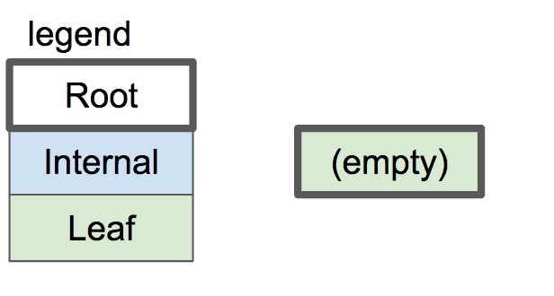

[译]B-Tree
B-Tree是 SQLite 用来表示表和索引的数据结构，因此它是一个非常核心的思想。本文只是介绍数据结构，所以不会有任何代码。
为什么树是数据库的良好数据结构？
- 搜索特定值很快（对数时间）
- 插入/删除您已经找到的值速度很快（重新平衡的时间很长）
- 遍历一系列值的速度很快（与哈希映射不同）
B 树与二叉树不同（“B”可能代表发明者的名字，但也可以代表“平衡”）。这是一个 B 树示例：

与二叉树不同，B 树中的每个节点可以有 2 个以上的子节点。每个节点最多可以有 m 个子节点，其中 m 称为树的“order”。为了保持树基本平衡，我们还说节点必须至少有 m/2 个子节点（向上舍入）。
例外情况：
- 叶节点有 0 个子节点
- 根节点可以有少于 m 个子节点，但必须至少有 2 个
- 如果根节点是叶节点（唯一的节点），它仍然有 0 个子节点
上图是一个B-Tree，SQLite用它来存储索引。为了存储表，SQLites 使用一种称为 B+ 树的变体。
| B-tree | B+ tree | |
|---|---|---|
| 发音 | “Bee Tree” | “Bee Plus Tree” |
| 用于存储 | 索引 | 表格 |
| 内部节点存储密钥 | Yes | Yes |
| 内部节点存储值 | Yes | No |
| 每个节点的子节点数量 | 较少 | 更多 |
| 内部节点与叶节点 | 结构相同 | 结构不同 |
在开始实现索引之前，将只讨论 B+ 树，但将其称为B-tree or a btree。
具有子节点的节点称为“内部”节点。内部节点和叶节点的结构不同：
| m 阶树. | 内部节点 | 叶节点 |
|---|---|---|
| 存储 | 指向子项的键和指针 | 键和值 |
| Number of keys | up to m-1 | as many as will fit |
| Number of pointers | number of keys + 1 | none |
| Number of values | none | number of keys |
| Key purpose | used for routing | paired with value |
| Stores values? | No | Yes |
让我们通过一个示例来了解 B 树在向其中插入元素时如何增长。为了简单起见，树的order为 3。这意味着：
- 每个内部节点最多 3 个子节点
- 每个内部节点最多 2 个keys
- 每个内部节点至少有 2 个子节点
- 每个内部节点至少有 1 个key
空的B 树只有一个节点：根节点。根节点从具有零个键/值对的叶节点开始：

如果我们插入几个键/值对，它们会按排序顺序存储在叶节点中。

假设叶子节点的容量是两个键/值对。当我们插入另一个时，我们必须分割叶节点并在每个节点中放入一半的对。两个节点都成为新内部节点的子节点，该内部节点现在将成为根节点。

内部节点有 1 个键和 2 个指向子节点的指针。如果我们想查找小于或等于 5 的键，我们会查找左孩子。如果我们想查找大于 5 的键，我们会查找右孩子。
现在让我们插入键“2”。首先，我们查找它所在的叶节点（如果存在），然后到达左叶节点。节点已满，因此我们分割叶子节点并在父节点中创建一个新条目。

让我们继续添加键。 18 和 21。我们到了必须再次分裂的地步，但父节点中没有空间容纳另一个键/指针对。

解决方案是将根节点拆分为两个内部节点，然后创建新的根节点作为它们的父节点。

当我们分裂根节点时，树的深度只会增加。每个叶节点具有相同的深度并且接近相同数量的键/值对，因此树保持平衡并且可以快速搜索。
我将推迟讨论从树中删除键，直到我们实现插入之后。
当我们实现这个数据结构时，每个节点将对应一页。根节点将存在于页 0 中。子指针将只是包含子节点的页号。